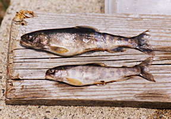

|
|
|
One for the record books... at least for Gary Colman and his fishing buddy (not pictured)... This is Gary Colman with the 2 beauties they reeled in. They lake trout, otherwise known as togue and they caught them both on Green Lake on May 25, 2008.
|
Home to the
Green Lake National Fish Hatchery, Green Lake is a wonderful
place to cast your line whether your are a beginner angler or a
tournament caliber master.
Jenkins Beach has a boat launch facility if you
bring your own boat or you can call ahead to reserve something
from our rental fleet and we'll have it
ready for you for your sunrise cast-off.
Launching fee is $5.00.
Don't forget your bait and tackle!

A rare fish found in a only a few Maine
Lakes, the Artic Char grow about 8 to 10 inches in Green Lake.
|